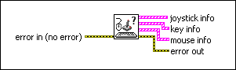

Query Input Devices VI
Owning Palette: Input Device Control VIs
Requires: Base Development System (Linux, Windows)
Obtains information about the devices connected to the computer.
(Windows) You must have DirectX 8.0 or later to use this VI.

 Add to the block diagram Add to the block diagram |
 Find on the palette Find on the palette |